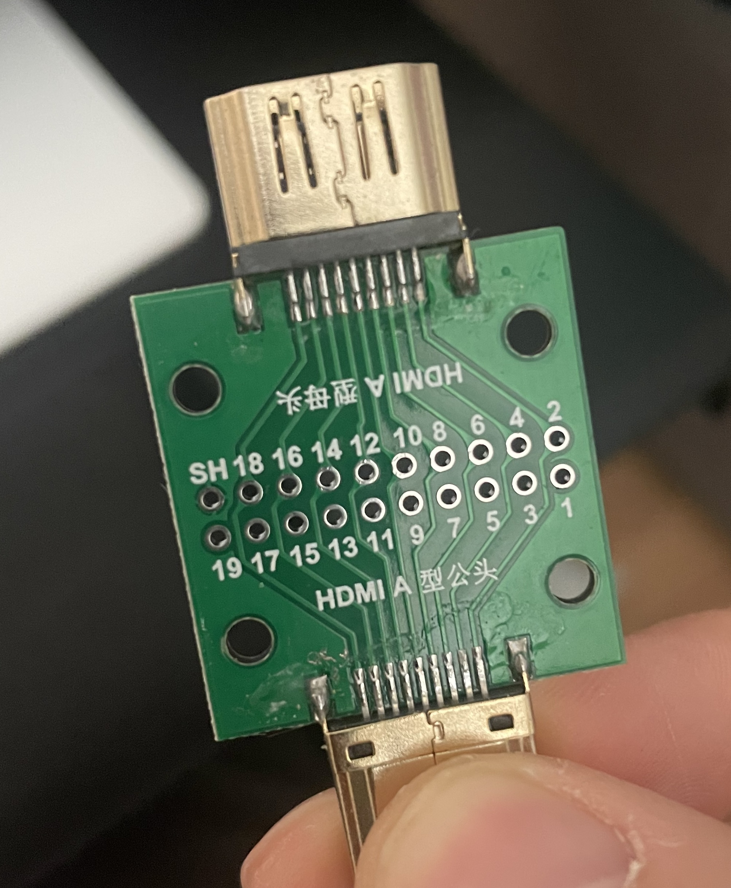

CEC¶
CEC is a feature of HDMI that allows individual CEC-enabled devices to control each other without user intervention.
Overview¶
I use CEC protocol control my TV with Home Assistant. Ex: Turn on/off TV, change input source, and control volume.
I first used a Raspberry PI to control the TV but I wanted to move to an ESP32 because the Raspberry pi was not reliable enough (See CEC through Raspberry PI).
I do not have any spare HDMI ports so I needed to create a CEC proxy between my TV and another device. In my case the Raspberry PI already plugged to my TV. The video and audio still need to pass through.
ESPHome configuration¶
I use this ESPHome external component “Palakis/esphome-native-hdmi-cec” to control CEC with Homeassistant through ESPHome.
I used CEC-O-Matic to determine the cec DATA for my TV.
Action |
Message |
|---|---|
Power on |
10:04 |
Standby |
10:36 |
Change source 1 |
1f:82:10:00 |
Change source 2 |
1f:82:20:00 |
Change source 3 |
1f:82:30:00 |
Volume up |
10:44:41:00 |
Volume down |
10:44:42:00 |
With this configuration:
substitutions:
name: "esphome-retro-cec"
friendly_name: ESPHome Retro CEC
esphome:
name: ${name}
friendly_name: ${friendly_name}
name_add_mac_suffix: false
platformio_options:
board_build.flash_mode: dio
project:
name: esphome.web
version: '1.0'
esp32:
board: esp32-s3-devkitc-1
framework:
type: esp-idf
# Enable logging
logger:
# Enable Home Assistant API
api:
encryption:
key: !secret esphome_encryption_key
# Allow Over-The-Air updates
ota:
platform: esphome
# Allow provisioning Wi-Fi via serial
improv_serial:
wifi:
# Set up a wifi access point
ap: {}
# In combination with the `ap` this allows the user
# to provision wifi credentials to the device via WiFi AP.
captive_portal:
dashboard_import:
package_import_url: github://esphome/firmware/esphome-web/esp32s3.yaml@v2
import_full_config: true
# Sets up Bluetooth LE (Only on ESP32) to allow the user
# to provision wifi credentials to the device.
esp32_improv:
authorizer: none
# To have a "next url" for improv serial
#web_server: !remove
external_components:
- source: github://Palakis/esphome-hdmi-cec
hdmi_cec:
address: 0x01 # Recorder
physical_address: 0x3000
pin: GPIO4
osd_name: "retro-cec"
button:
- platform: template
name: TV Volume Up
on_press:
- hdmi_cec.send:
destination: 0x0
data: [0x44, 0x41]
- platform: template
name: TV Volume Down
on_press:
- hdmi_cec.send:
destination: 0x0
data: [0x44, 0x42]
- platform: template
name: Activate TV
on_press:
- hdmi_cec.send:
destination: 0x0
data: [0x04]
- platform: template
name: Standby TV
on_press:
- hdmi_cec.send:
destination: 0x0
data: [0x36]
- platform: template
name: Select Input 1 (hdmi switch)
on_press:
- hdmi_cec.send:
destination: 0xF
data: [0x82, 0x10, 0x0]
- platform: template
name: Select Input 2 (Retrotink4k)
on_press:
- hdmi_cec.send:
destination: 0xF
data: [0x82, 0x20, 0x0]
- platform: template
name: Select Input 3 (pi0)
on_press:
- hdmi_cec.send:
destination: 0xF
data: [0x82, 0x30, 0x0]
Prototype¶
I first made a prototype using esp32-s3 with an HDMI proto board.
Pin 13 goes to GPIO4 on this ESP32 board (configurable).
Pin 17 goes to the ground on the ESP32 board.
PIN 18 goes to the 5V on the ESP32 board. Needed for the TV to detect the device.

This proof of concept was working but it was not a man in the middle CEC adapter like I needed.
Real board¶
I use this useful female to male HDMI board to plug inbetween my Raspberry PI and my TV.
We can solder wires on any of the pins which is perfect for my needs.
I cut the trace of pin 13 on the side of the Raspberry PI to avoid conflicts.
I then soldered a wire from pin 13 to GPIO04 and a wire from the pin 17 to the ground of the ESP32 board I used from the prototype (probably overkill).
I did not need to solder the 5V pin because the Raspberry PI is already providing the power.

I then used shrink tube to bind the two boards together.